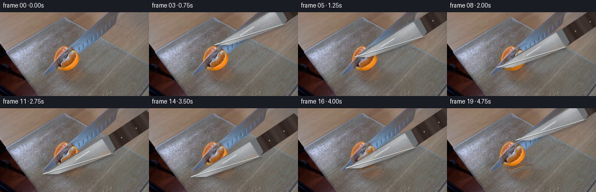
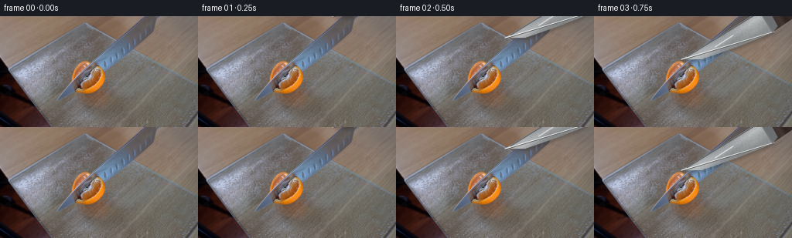
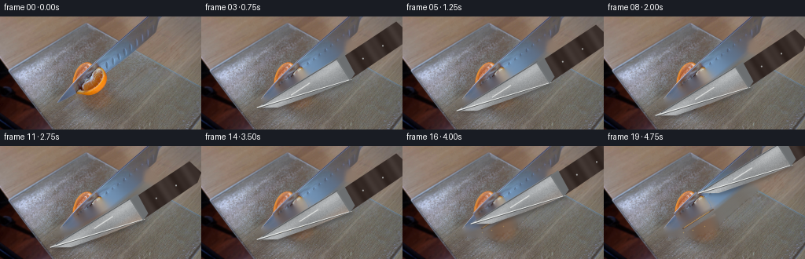
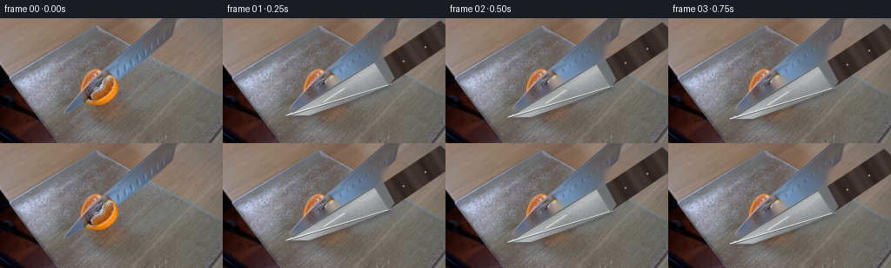

CODING AGENTS AS PIXEL WORLD MODELS
traex/GPT-5.6-Sol · 0042
点击播放 · 原生 RGB 像素
逐轮保存的候选
回放视频、检查图与代码变化。
每份候选均可单独播放。实际图片检查记录在下方工具轨迹中。
候选 01播放与检查图
点击播放 · 原生 RGB 像素


展开代码变化
--- 上一保存版本
+++ 本次保存版本
@@ -0,0 +1,204 @@
+from pathlib import Path
+import numpy as np
+import cv2
+from PIL import Image
+import artifact_io
+
+# Analytic, locked-camera animation composited over the supplied photograph.
+ROOT = Path(__file__).resolve().parent
+still = np.asarray(Image.open(ROOT / "first_frame.png").convert("RGB"), dtype=np.uint8)
+H, W = still.shape[:2]
+
+
+def fruit_silhouette(image):
+ """Recover the compact tangerine silhouette from its orange chroma."""
+ hsv = cv2.cvtColor(image, cv2.COLOR_RGB2HSV)
+ yy, xx = np.mgrid[:H, :W]
+ roi = (xx >= 87) & (xx <= 146) & (yy >= 52) & (yy <= 122)
+ seed = roi & (hsv[..., 0] < 34) & (hsv[..., 1] > 55) & (hsv[..., 2] > 58) & (image[..., 0] > 92)
+ n, labels, stats, _ = cv2.connectedComponentsWithStats(seed.astype(np.uint8), 8)
+ keep = np.zeros((H, W), np.uint8)
+ # Fruit-colored islands all lie around the same central object; discard specks.
+ for j in range(1, n):
+ x, y, w, h, area = stats[j]
+ if area >= 9 and x < 142 and x + w > 91 and y < 119 and y + h > 56:
+ keep[labels == j] = 255
+ pts = np.column_stack(np.where(keep > 0)[::-1])
+ if len(pts) < 3:
+ cv2.ellipse(keep, (118, 88), (27, 31), 0, 0, 360, 255, -1)
+ else:
+ hull = cv2.convexHull(pts.astype(np.int32))
+ keep[:] = 0
+ cv2.fillConvexPoly(keep, hull, 255)
+ # Do not let a chromatic background outlier make an over-large hull.
+ ellipse = np.zeros_like(keep)
+ cv2.ellipse(ellipse, (117, 88), (31, 35), -6, 0, 360, 255, -1)
+ keep = cv2.bitwise_and(keep, ellipse)
+ return keep
+
+
+fruit_mask = fruit_silhouette(still)
+# A clean local estimate of the glass board is only needed in tiny cracks opened
+# between the two fruit pieces.
+inpaint_mask = cv2.dilate(fruit_mask, np.ones((5, 5), np.uint8), iterations=1)
+board_under_fruit = cv2.inpaint(still, inpaint_mask, 5, cv2.INPAINT_TELEA)
+
+# Fixed fine-grain metal texture; deterministic on every regeneration.
+rng = np.random.default_rng(420042)
+metal_noise = rng.normal(0, 1, (H, W)).astype(np.float32)
+metal_noise = cv2.GaussianBlur(metal_noise, (0, 0), .45)
+
+
+def aa_polygon(points, scale=4):
+ m = np.zeros((H * scale, W * scale), np.uint8)
+ q = np.round(np.asarray(points) * scale).astype(np.int32)
+ cv2.fillPoly(m, [q], 255, lineType=cv2.LINE_AA)
+ return cv2.resize(m, (W, H), interpolation=cv2.INTER_AREA).astype(np.float32) / 255.0
+
+
+def aa_line(a, b, width, scale=4):
+ m = np.zeros((H * scale, W * scale), np.uint8)
+ aa = tuple(np.round(np.asarray(a) * scale).astype(int))
+ bb = tuple(np.round(np.asarray(b) * scale).astype(int))
+ cv2.line(m, aa, bb, 255, max(1, round(width * scale)), cv2.LINE_AA)
+ return cv2.resize(m, (W, H), interpolation=cv2.INTER_AREA).astype(np.float32) / 255.0
+
+
+def over(img, color, alpha):
+ a = np.clip(alpha, 0, 1)[..., None]
+ return img * (1.0 - a) + color * a
+
+
+def move_fruit(base, amount, line_p):
+ """Let the two newly cut pieces relax apart by a few millimetres."""
+ if amount <= 0:
+ return base.astype(np.float32)
+ # Cutting edge at the bottom of the blade: y = py - .30(x-px).
+ yy, xx = np.mgrid[:H, :W]
+ cut_y = line_p[1] - .30 * (xx - line_p[0])
+ upper = ((fruit_mask > 0) & (yy <= cut_y)).astype(np.uint8) * 255
+ lower = ((fruit_mask > 0) & (yy > cut_y)).astype(np.uint8) * 255
+ result = board_under_fruit.astype(np.float32).copy()
+ # Restore everything outside the original fruit exactly.
+ result[fruit_mask == 0] = base[fruit_mask == 0]
+ for part, dx, dy in ((upper, -2.0 * amount, -1.0 * amount),
+ (lower, 3.2 * amount, 4.2 * amount)):
+ M = np.float32([[1, 0, dx], [0, 1, dy]])
+ shifted_rgb = cv2.warpAffine(still, M, (W, H), flags=cv2.INTER_LINEAR,
+ borderMode=cv2.BORDER_REFLECT)
+ shifted_a = cv2.warpAffine(part, M, (W, H), flags=cv2.INTER_LINEAR,
+ borderMode=cv2.BORDER_CONSTANT).astype(np.float32) / 255.0
+ result = over(result, shifted_rgb.astype(np.float32), shifted_a)
+ # Moist, dark cut groove and small pale strands of pith, clipped to fruit.
+ seam = aa_line((91, line_p[1] - .30 * (91-line_p[0])),
+ (145, line_p[1] - .30 * (145-line_p[0])), 1.35)
+ seam *= (cv2.dilate(fruit_mask, np.ones((3,3),np.uint8), iterations=1) > 0)
+ result = over(result, np.array([91, 50, 21], np.float32), seam * (.48 * amount))
+ pith = aa_line((102, line_p[1] - .30 * (102-line_p[0]) - .4),
+ (134, line_p[1] - .30 * (134-line_p[0]) - .4), .55)
+ pith *= (fruit_mask > 0)
+ result = over(result, np.array([245, 188, 92], np.float32), pith * (.62 * amount))
+ return result
+
+
+def render_knife(img, p, contact=0.0):
+ """Render a tapered chef's knife, including board shadow and reflections."""
+ p = np.asarray(p, np.float32)
+ u = np.array([0.840, -0.542], np.float32) # toward handle
+ n = np.array([0.542, 0.840], np.float32) # broad side of blade
+ q = p + u * 120.0
+ heel = q + n * 35.0
+ # Slightly convex cutting edge gives the familiar chef-knife profile.
+ poly = np.array([p, p + u*112 + n*2, q + n*3, heel,
+ p + u*68 + n*25, p + u*22 + n*14], np.float32)
+ blade = aa_polygon(poly)
+
+ out = img.astype(np.float32)
+ # Soft contact shadow on the glass and fruit.
+ shadow_poly = poly + np.array([2.2, 3.0], np.float32)
+ shadow = aa_polygon(shadow_poly)
+ shadow = cv2.GaussianBlur(shadow, (0, 0), 2.0)
+ out = over(out, np.array([26, 25, 25], np.float32), shadow * (0.25 + .08*contact))
+
+ yy, xx = np.mgrid[:H, :W].astype(np.float32)
+ relx, rely = xx-p[0], yy-p[1]
+ along = relx*u[0] + rely*u[1]
+ across = relx*n[0] + rely*n[1]
+ # Layered cool/warm reflections make the broad side read as brushed steel.
+ lum = (146.0 + 24*np.exp(-((across-8)/5.5)**2)
+ - 20*np.exp(-((across-28)/7.0)**2)
+ + 9*np.sin(along*.075) + 4.2*metal_noise)
+ scene_luma = cv2.cvtColor(np.clip(out,0,255).astype(np.uint8), cv2.COLOR_RGB2GRAY)
+ lum += (scene_luma.astype(np.float32)-110)*.13
+ metal = np.stack([lum+8, lum+11, lum+13], axis=-1)
+ # Tangerine-colored bounce along the lower edge while the steel is in it.
+ warm = np.clip((across-19)/13, 0, 1) * np.clip((150-along)/45, 0, 1) * contact
+ metal[..., 0] += 35*warm
+ metal[..., 1] += 8*warm
+ metal[..., 2] -= 12*warm
+ out = over(out, np.clip(metal, 35, 225), blade * .965)
+
+ # Spine, heel and razor edge.
+ spine = aa_line(p + u*8 + n*.8, q + n*3, 1.0)
+ out = over(out, np.array([75, 78, 81], np.float32), spine*.78)
+ edge = aa_line(p, heel, 1.10)
+ out = over(out, np.array([238, 240, 238], np.float32), edge*.90)
+ edge_dark = aa_line(p + n*1.15, heel + n*.45, .55)
+ out = over(out, np.array([56, 57, 57], np.float32), edge_dark*.72)
+ # A narrow traveling glint on the blade.
+ glint_center = p + u*(58 + 17*contact) + n*10
+ glint = aa_line(glint_center-u*13, glint_center+u*15, .65)
+ out = over(out, np.array([250, 251, 248], np.float32), glint*blade*.64)
+
+ # Dark wooden handle continuing out of the upper-right edge.
+ h0 = q + n*5
+ handle_poly = np.array([h0, h0+u*88-n*1, h0+u*93+n*19,
+ h0+u*82+n*27, h0+n*29], np.float32)
+ hm = aa_polygon(handle_poly)
+ # Subtle grain aligned along the handle.
+ hrelx, hrely = xx-h0[0], yy-h0[1]
+ ha = hrelx*u[0] + hrely*u[1]
+ wood_l = 40 + 9*np.sin(ha*.18) + 4*np.sin(ha*.51)
+ wood = np.stack([wood_l+15, wood_l+4, wood_l], axis=-1)
+ out = over(out, np.clip(wood, 20, 75), hm*.985)
+ # Bolster and two steel rivets.
+ bolster = aa_polygon([q+n*3-u*2, q+n*3+u*10, q+n*31+u*8, q+n*35-u*2])
+ out = over(out, np.array([111, 115, 117], np.float32), bolster*.95)
+ for d in (27, 57):
+ c = h0 + u*d + n*15
+ rr = np.sqrt((xx-c[0])**2 + (yy-c[1])**2)
+ rivet = np.clip(1.5-rr, 0, 1)
+ out = over(out, np.array([178, 181, 180], np.float32), rivet*.92*hm)
+ return np.clip(out, 0, 255)
+
+
+# Tip path: the knife enters from upper right, rocks smoothly through the fruit,
+# then lifts enough to reveal the completed cut.
+path = [
+ (205,-22), (174,0), (141,28), (113,56), (101,72),
+ (97,77), (93,83), (89,89), (86,95), (82,101),
+ (78,107), (74,113), (72,117), (72,118), (72,118),
+ (75,114), (82,103), (92,89), (104,72), (118,55),
+]
+frames = [still.copy()]
+final_p = np.array(path[13], np.float32)
+for i in range(1, 20):
+ # The separated wedges remain where physics left them while the knife lifts.
+ split = np.clip((i-11)/6.0, 0, 1)
+ img = move_fruit(still, split, final_p)
+ # Contact rises during the downstroke and fades during withdrawal.
+ contact = float(np.clip(1.0-abs(i-12)/8.0, 0, 1))
+ img = render_knife(img, path[i], contact)
+ # Tiny wet highlights become visible beside the finished incision.
+ if i >= 13:
+ yy, xx = np.mgrid[:H, :W]
+ sparkle = np.zeros((H,W), np.float32)
+ for sx, sy in ((113,107), (128,102), (101,110)):
+ sparkle += np.clip(1.0-np.hypot(xx-sx, yy-sy)/1.25, 0, 1)
+ img = over(img, np.array([255, 210, 104], np.float32), sparkle*(.18+.03*(i-13)))
+ frames.append(np.clip(img, 0, 255).astype(np.uint8))
+
+frames = np.stack(frames, axis=0)
+# Contract-critical identity: do not allow even a conversion round-trip on frame 00.
+frames[0] = still
+artifact_io.save(frames, ROOT)
候选 02播放与检查图
点击播放 · 原生 RGB 像素


展开代码变化
--- 上一保存版本
+++ 本次保存版本
@@ -38,10 +38,6 @@
fruit_mask = fruit_silhouette(still)
-# A clean local estimate of the glass board is only needed in tiny cracks opened
-# between the two fruit pieces.
-inpaint_mask = cv2.dilate(fruit_mask, np.ones((5, 5), np.uint8), iterations=1)
-board_under_fruit = cv2.inpaint(still, inpaint_mask, 5, cv2.INPAINT_TELEA)
# Fixed fine-grain metal texture; deterministic on every regeneration.
rng = np.random.default_rng(420042)
@@ -64,6 +60,25 @@
return cv2.resize(m, (W, H), interpolation=cv2.INTER_AREA).astype(np.float32) / 255.0
+# The supplied instant already contains the knife at first contact. Reconstruct
+# the narrow patch behind that initial blade once, so the same knife can move
+# rather than leaving a stationary duplicate behind it. The mask follows the
+# photographed blade's diagonal lower half and is largely covered again during
+# the downstroke.
+old_blade = aa_polygon([(71, 113), (163, 45), (184, 26), (201, 48),
+ (164, 79), (145, 96), (101, 113)])
+old_mask = (cv2.dilate((old_blade*255).astype(np.uint8),
+ np.ones((5,5), np.uint8), iterations=1))
+clean_scene = cv2.inpaint(still, old_mask, 7, cv2.INPAINT_TELEA)
+# Keep the untouched original wherever the estimate is not required.
+clean_scene[old_mask == 0] = still[old_mask == 0]
+
+# A clean local estimate of the glass board is only needed in tiny cracks opened
+# between the two fruit pieces.
+inpaint_mask = cv2.dilate(fruit_mask, np.ones((5, 5), np.uint8), iterations=1)
+board_under_fruit = cv2.inpaint(clean_scene, inpaint_mask, 5, cv2.INPAINT_TELEA)
+
+
def over(img, color, alpha):
a = np.clip(alpha, 0, 1)[..., None]
return img * (1.0 - a) + color * a
@@ -73,9 +88,9 @@
"""Let the two newly cut pieces relax apart by a few millimetres."""
if amount <= 0:
return base.astype(np.float32)
- # Cutting edge at the bottom of the blade: y = py - .30(x-px).
+ # Cutting edge follows the knife axis (about 33 degrees upward to the right).
yy, xx = np.mgrid[:H, :W]
- cut_y = line_p[1] - .30 * (xx - line_p[0])
+ cut_y = line_p[1] - .645 * (xx - line_p[0])
upper = ((fruit_mask > 0) & (yy <= cut_y)).astype(np.uint8) * 255
lower = ((fruit_mask > 0) & (yy > cut_y)).astype(np.uint8) * 255
result = board_under_fruit.astype(np.float32).copy()
@@ -84,18 +99,18 @@
for part, dx, dy in ((upper, -2.0 * amount, -1.0 * amount),
(lower, 3.2 * amount, 4.2 * amount)):
M = np.float32([[1, 0, dx], [0, 1, dy]])
- shifted_rgb = cv2.warpAffine(still, M, (W, H), flags=cv2.INTER_LINEAR,
+ shifted_rgb = cv2.warpAffine(clean_scene, M, (W, H), flags=cv2.INTER_LINEAR,
borderMode=cv2.BORDER_REFLECT)
shifted_a = cv2.warpAffine(part, M, (W, H), flags=cv2.INTER_LINEAR,
borderMode=cv2.BORDER_CONSTANT).astype(np.float32) / 255.0
result = over(result, shifted_rgb.astype(np.float32), shifted_a)
# Moist, dark cut groove and small pale strands of pith, clipped to fruit.
- seam = aa_line((91, line_p[1] - .30 * (91-line_p[0])),
- (145, line_p[1] - .30 * (145-line_p[0])), 1.35)
+ seam = aa_line((91, line_p[1] - .645 * (91-line_p[0])),
+ (145, line_p[1] - .645 * (145-line_p[0])), 1.35)
seam *= (cv2.dilate(fruit_mask, np.ones((3,3),np.uint8), iterations=1) > 0)
result = over(result, np.array([91, 50, 21], np.float32), seam * (.48 * amount))
- pith = aa_line((102, line_p[1] - .30 * (102-line_p[0]) - .4),
- (134, line_p[1] - .30 * (134-line_p[0]) - .4), .55)
+ pith = aa_line((102, line_p[1] - .645 * (102-line_p[0]) - .4),
+ (134, line_p[1] - .645 * (134-line_p[0]) - .4), .55)
pith *= (fruit_mask > 0)
result = over(result, np.array([245, 188, 92], np.float32), pith * (.62 * amount))
return result
@@ -175,17 +190,17 @@
# Tip path: the knife enters from upper right, rocks smoothly through the fruit,
# then lifts enough to reveal the completed cut.
path = [
- (205,-22), (174,0), (141,28), (113,56), (101,72),
- (97,77), (93,83), (89,89), (86,95), (82,101),
- (78,107), (74,113), (72,117), (72,118), (72,118),
- (75,114), (82,103), (92,89), (104,72), (118,55),
+ (74,110), (73,112), (72,114), (71,116), (70,118),
+ (69,120), (68,122), (67,124), (66,126), (65,128),
+ (64,129), (64,129), (64,129), (66,126), (71,119),
+ (78,110), (87,99), (97,87), (108,74), (120,60),
]
frames = [still.copy()]
-final_p = np.array(path[13], np.float32)
+final_p = np.array(path[10], np.float32)
for i in range(1, 20):
# The separated wedges remain where physics left them while the knife lifts.
split = np.clip((i-11)/6.0, 0, 1)
- img = move_fruit(still, split, final_p)
+ img = move_fruit(clean_scene, split, final_p)
# Contact rises during the downstroke and fades during withdrawal.
contact = float(np.clip(1.0-abs(i-12)/8.0, 0, 1))
img = render_knife(img, path[i], contact)
可观测工具轨迹
实际执行的命令与返回图片。
命令 1exit 0
/bin/bash -lc "cat GENERATION_RULES.md && printf '\\n---PROMPT---\\n' && cat prompt.txt"
命令 2exit 0
/bin/bash -lc "find . -maxdepth 2 -type f -printf '%p %s bytes\\n' | sort && python3 - <<'PY'
from PIL import Image
im=Image.open('first_frame.png')
print(im.mode, im.size)
PY"命令 3exit 0
/bin/bash -lc "python3 - <<'PY'
from PIL import Image
import numpy as np
im=np.array(Image.open('first_frame.png'))
# regional means 16x9 grid HSV-ish print RGB
for gy in range(9):
row=[]
for gx in range(16):
p=im[gy*16:(gy+1)*16,gx*16:(gx+1)*16]
row.append('%02x%02x%02x'%tuple(np.mean(p,axis=(0,1)).astype(int)))
print(' '.join(row))
print('range', im.reshape(-1,3).min(0), im.reshape(-1,3).max(0), 'mean',im.mean((0,1)))
# classify chars based on color: orange if R>1.4B and R>G*1.2; dark; bright; reddish wood; blue-ish
for y in range(0,144,4):
s=''
for x in range(0,256,4):
p=im[y:y+4,x:x+4].mean((0,1));r,g,b=p
if r>100 and r>g*1.35 and g>b*1.2: c='O'
elif r>120 and r>g*1.15 and b<90:c='o'
elif max(p)<45:c='#'
elif np.mean(p)>200:c=' '
elif b>r*1.15:c='B'
elif abs(r-g)<12 and abs(g-b)<12: c='.'
elif r>g*1.2 and g>b*1.05:c='w'
else:c='-'
s+=c
print(s)
PY"命令 4exit 1
/bin/bash -lc "python3 - <<'PY'
import cv2, numpy as np
from PIL import Image
im=cv2.imread('first_frame.png'); hsv=cv2.cvtColor(im,cv2.COLOR_BGR2HSV)
# kmeans colors, print centroid/range/count
z=im.reshape(-1,3).astype(np.float32)
crit=(cv2.TERM_CRITERIA_EPS+cv2.TERM_CRITERIA_MAX_ITER,50,.2)
_,lab,cen=cv2.kmeans(z,12,None,crit,10,cv2.KMEANS_PP_CENTERS)
for i,c in sorted(enumerate(cen),key=lambda q:-np.sum(lab==q[0])):
ys,xs=np.where(lab.reshape(144,256)==i)
print(i,'RGB',c[::-1].astype(int),'count',len(xs),'box',xs.min(),ys.min(),xs.max(),ys.max(),'center',round(xs.mean()),round(ys.mean()))
# orange HSV comps
for name,lo,hi in [('orange',(0,100,60),(30,255,255)),('red',(0,100,20),(12,255,255)),('dark',(0,0,0),(180,255,50)),('blue',(90,30,40),(130,255,255))]:
mask=cv2.inRange(hsv,np.array(lo),np.array(hi))
n,l,st,ct=cv2.connectedComponentsWithStats(mask)
print('\\n',name)
for j in sorted(range(1,n),key=lambda j:-st[j,4])[:10]:print(st[j].tolist(),ct[j].round(1))
# edge density blocks
ed=cv2.Canny(im,70,140)
print('\\nedges ascii')
for y in range(0,144,4):
print(''.join(' #'[ed[y:y+4,x:x+4].mean()>25] for x in range(0,256,4)))
PY"命令 5exit 0
/bin/bash -lc "python3 - <<'PY'
import cv2,numpy as np
im=cv2.imread('first_frame.png')
g=cv2.cvtColor(im,cv2.COLOR_BGR2GRAY)
for params in [(40,100),(60,140),(100,200)]:
e=cv2.Canny(g,*params)
ls=cv2.HoughLinesP(e,1,np.pi/180,20,minLineLength=15,maxLineGap=5)
print(params)
if ls is not None:
for q in sorted([x[0].tolist() for x in ls],key=lambda z:-((z[2]-z[0])**2+(z[3]-z[1])**2))[:40]:
x1,y1,x2,y2=q; print(q, 'len',round(np.hypot(x2-x1,y2-y1),1),'a',round(np.degrees(np.arctan2(y2-y1,x2-x1)),1))
# Sobel by block intensity chars
ed=cv2.Canny(g,50,120)
print('edge blocks')
for y in range(0,144,3):
print(''.join('#' if ed[y:y+3,x:x+3].mean()>32 else '+' if ed[y:y+3,x:x+3].mean()>12 else ' ' for x in range(0,256,3)))
PY"命令 6exit 0
/bin/bash -lc "python3 - <<'PY'
import cv2,numpy as np
im=cv2.imread('first_frame.png'); z=im.reshape(-1,3).astype(np.float32)
_,l,c=cv2.kmeans(z,16,None,(3,80,.1),10,cv2.KMEANS_PP_CENTERS); l=l.reshape(144,256)
# assign chars sorted/manual print centers BGR->RGB
chars='0123456789ABCDEF'
for i,x in enumerate(c):print(chars[i],x[::-1].astype(int))
# majority in each 3x3 region object crop
for y in range(0,126,3):
s=''
for x in range(60,211,3):
a=l[y:y+3,x:x+3]; q=np.bincount(a.ravel(),minlength=16).argmax();s+=chars[q]
print(f'{y:03}',s)
PY"命令 7exit 0
/bin/bash -lc "python3 - <<'PY'
from PIL import Image
import numpy as np
im=np.array(Image.open('first_frame.png'))
# samples along diagonal sum s; x step 8, print RGB and gradient
for s in range(150,231,5):
vals=[]
for x in range(max(80,s-143),min(231,s+1),10):
y=s-x
if 0<=y<144: vals.append(tuple(im[y,x]))
print(s, vals)
# pixel rows x90:210 every 5 output color codes based kmeans labels
import cv2
z=im.reshape(-1,3).astype(np.float32);_,l,c=cv2.kmeans(z,16,None,(3,50,.2),5,cv2.KMEANS_PP_CENTERS);l=l.reshape(144,256)
for y in range(0,121,5):print(y,''.join('%X'%v for v in l[y,80:221:5]))
PY"命令 8exit 0
/bin/bash -lc "python3 - <<'PY'
from PIL import Image
import numpy as np, cv2
im=np.array(Image.open('first_frame.png')); hsv=cv2.cvtColor(im,cv2.COLOR_RGB2HSV)
# print crop every 2x2 HSV classification
for y in range(48,121,2):
s=''
for x in range(70,171,2):
p=im[y:y+2,x:x+2].mean((0,1)); h=cv2.cvtColor(np.uint8([[p]]),cv2.COLOR_RGB2HSV)[0,0]; H,S,V=h
if S<18 and V>150:c='M' # bright neutral metal
elif S<25 and V>110:c='m'
elif H<8 and S>80:c='r'
elif H<18 and S>100:c='O'
elif H<28 and S>80:c='o'
elif H<35 and S>35:c='p'
elif 90<H<125 and S>30:c='b'
elif V<60:c='#'
elif V<90:c='d'
elif S<25:c='.'
elif H<15 and S>30:c='w'
else:c='-'
s+=c
print('%03d'%y,s)
PY"命令 9exit 0
/bin/bash -lc "sed -n '1,240p' artifact_io.py"
命令 10exit 0
/bin/bash -lc "python3 - <<'PY'
import cv2,numpy as np
im=cv2.imread('first_frame.png'); hsv=cv2.cvtColor(im,cv2.COLOR_BGR2HSV)
# cols/rows stats ROI blue hue (OpenCV hsv BGR)
mask=((hsv[:,:,0]>90)&(hsv[:,:,0]<130)&(hsv[:,:,1]>25)&(hsv[:,:,2]>50)).astype(np.uint8)
for y in range(0,115,5):
xs=np.where(mask[y:y+5].any(0))[0]; xs=xs[(xs>60)&(xs<220)]
print('y',y,'ranges', end=' ')
if len(xs):
groups=np.split(xs,np.where(np.diff(xs)>1)[0]+1); print([(a[0],a[-1]) for a in groups if len(a)>1])
else:print()
print('orange rows')
mask=((hsv[:,:,0]<30)&(hsv[:,:,1]>80)&(hsv[:,:,2]>60)).astype(np.uint8)
for y in range(50,125,4):
xs=np.where(mask[y:y+4].any(0))[0];xs=xs[(xs>60)&(xs<180)]
if len(xs):
groups=np.split(xs,np.where(np.diff(xs)>1)[0]+1); print(y,[(a[0],a[-1]) for a in groups if len(a)>1])
PY"命令 11exit 0
/bin/bash -lc "cat > generate.py <<'PY'
from pathlib import Path
import numpy as np
import cv2
from PIL import Image
import artifact_io
# Analytic, locked-camera animation composited over the supplied photograph.
ROOT = Path(__file__).resolve().parent
still = np.asarray(Image.open(ROOT / \"first_frame.png\").convert(\"RGB\"), dtype=np.uint8)
H, W = still.shape[:2]
def fruit_silhouette(image):
\"\"\"Recover the compact tangerine silhouette from its orange chroma.\"\"\"
hsv = cv2.cvtColor(image, cv2.COLOR_RGB2HSV)
yy, xx = np.mgrid[:H, :W]
roi = (xx >= 87) & (xx <= 146) & (yy >= 52) & (yy <= 122)
seed = roi & (hsv[..., 0] < 34) & (hsv[..., 1] > 55) & (hsv[..., 2] > 58) & (image[..., 0] > 92)
n, labels, stats, _ = cv2.connectedComponentsWithStats(seed.astype(np.uint8), 8)
keep = np.zeros((H, W), np.uint8)
# Fruit-colored islands all lie around the same central object; discard specks.
for j in range(1, n):
x, y, w, h, area = stats[j]
if area >= 9 and x < 142 and x + w > 91 and y < 119 and y + h > 56:
keep[labels == j] = 255
pts = np.column_stack(np.where(keep > 0)[::-1])
if len(pts) < 3:
cv2.ellipse(keep, (118, 88), (27, 31), 0, 0, 360, 255, -1)
else:
hull = cv2.convexHull(pts.astype(np.int32))
keep[:] = 0
cv2.fillConvexPoly(keep, hull, 255)
# Do not let a chromatic background outlier make an over-large hull.
ellipse = np.zeros_like(keep)
cv2.ellipse(ellipse, (117, 88), (31, 35), -6, 0, 360, 255, -1)
keep = cv2.bitwise_and(keep, ellipse)
return keep
fruit_mask = fruit_silhouette(still)
# A clean local estimate of the glass board is only needed in tiny cracks opened
# between the two fruit pieces.
inpaint_mask = cv2.dilate(fruit_mask, np.ones((5, 5), np.uint8), iterations=1)
board_under_fruit = cv2.inpaint(still, inpaint_mask, 5, cv2.INPAINT_TELEA)
# Fixed fine-grain metal texture; deterministic on every regeneration.
rng = np.random.default_rng(420042)
metal_noise = rng.normal(0, 1, (H, W)).astype(np.float32)
metal_noise = cv2.GaussianBlur(metal_noise, (0, 0), .45)
def aa_polygon(points, scale=4):
m = np.zeros((H * scale, W * scale), np.uint8)
q = np.round(np.asarray(points) * scale).astype(np.int32)
cv2.fillPoly(m, [q], 255, lineType=cv2.LINE_AA)
return cv2.resize(m, (W, H), interpolation=cv2.INTER_AREA).astype(np.float32) / 255.0
def aa_line(a, b, width, scale=4):
m = np.zeros((H * scale, W * scale), np.uint8)
aa = tuple(np.round(np.asarray(a) * scale).astype(int))
bb = tuple(np.round(np.asarray(b) * scale).astype(int))
cv2.line(m, aa, bb, 255, max(1, round(width * scale)), cv2.LINE_AA)
return cv2.resize(m, (W, H), interpolation=cv2.INTER_AREA).astype(np.float32) / 255.0
def over(img, color, alpha):
a = np.clip(alpha, 0, 1)[..., None]
return img * (1.0 - a) + color * a
def move_fruit(base, amount, line_p):
\"\"\"Let the two newly cut pieces relax apart by a few millimetres.\"\"\"
if amount <= 0:
return base.astype(np.float32)
# Cutting edge at the bottom of the blade: y = py - .30(x-px).
yy, xx = np.mgrid[:H, :W]
cut_y = line_p[1] - .30 * (xx - line_p[0])
upper = ((fruit_mask > 0) & (yy <= cut_y)).astype(np.uint8) * 255
lower = ((fruit_mask > 0) & (yy > cut_y)).astype(np.uint8) * 255
result = board_under_fruit.astype(np.float32).copy()
# Restore everything outside the original fruit exactly.
result[fruit_mask == 0] = base[fruit_mask == 0]
for part, dx, dy in ((upper, -2.0 * amount, -1.0 * amount),
(lower, 3.2 * amount, 4.2 * amount)):
M = np.float32([[1, 0, dx], [0, 1, dy]])
shifted_rgb = cv2.warpAffine(still, M, (W, H), flags=cv2.INTER_LINEAR,
borderMode=cv2.BORDER_REFLECT)
shifted_a = cv2.warpAffine(part, M, (W, H), flags=cv2.INTER_LINEAR,
borderMode=cv2.BORDER_CONSTANT).astype(np.float32) / 255.0
result = over(result, shifted_rgb.astype(np.float32), shifted_a)
# Moist, dark cut groove and small pale strands of pith, clipped to fruit.
seam = aa_line((91, line_p[1] - .30 * (91-line_p[0])),
(145, line_p[1] - .30 * (145-line_p[0])), 1.35)
seam *= (cv2.dilate(fruit_mask, np.ones((3,3),np.uint8), iterations=1) > 0)
result = over(result, np.array([91, 50, 21], np.float32), seam * (.48 * amount))
pith = aa_line((102, line_p[1] - .30 * (102-line_p[0]) - .4),
(134, line_p[1] - .30 * (134-line_p[0]) - .4), .55)
pith *= (fruit_mask > 0)
result = over(result, np.array([245, 188, 92], np.float32), pith * (.62 * amount))
return result
def render_knife(img, p, contact=0.0):
\"\"\"Render a tapered chef's knife, including board shadow and reflections.\"\"\"
p = np.asarray(p, np.float32)
u = np.array([0.840, -0.542], np.float32) # toward handle
n = np.array([0.542, 0.840], np.float32) # broad side of blade
q = p + u * 120.0
heel = q + n * 35.0
# Slightly convex cutting edge gives the familiar chef-knife profile.
poly = np.array([p, p + u*112 + n*2, q + n*3, heel,
p + u*68 + n*25, p + u*22 + n*14], np.float32)
blade = aa_polygon(poly)
out = img.astype(np.float32)
# Soft contact shadow on the glass and fruit.
shadow_poly = poly + np.array([2.2, 3.0], np.float32)
shadow = aa_polygon(shadow_poly)
shadow = cv2.GaussianBlur(shadow, (0, 0), 2.0)
out = over(out, np.array([26, 25, 25], np.float32), shadow * (0.25 + .08*contact))
yy, xx = np.mgrid[:H, :W].astype(np.float32)
relx, rely = xx-p[0], yy-p[1]
along = relx*u[0] + rely*u[1]
across = relx*n[0] + rely*n[1]
# Layered cool/warm reflections make the broad side read as brushed steel.
lum = (146.0 + 24*np.exp(-((across-8)/5.5)**2)
- 20*np.exp(-((across-28)/7.0)**2)
+ 9*np.sin(along*.075) + 4.2*metal_noise)
scene_luma = cv2.cvtColor(np.clip(out,0,255).astype(np.uint8), cv2.COLOR_RGB2GRAY)
lum += (scene_luma.astype(np.float32)-110)*.13
metal = np.stack([lum+8, lum+11, lum+13], axis=-1)
# Tangerine-colored bounce along the lower edge while the steel is in it.
warm = np.clip((across-19)/13, 0, 1) * np.clip((150-along)/45, 0, 1) * contact
metal[..., 0] += 35*warm
metal[..., 1] += 8*warm
metal[..., 2] -= 12*warm
out = over(out, np.clip(metal, 35, 225), blade * .965)
# Spine, heel and razor edge.
spine = aa_line(p + u*8 + n*.8, q + n*3, 1.0)
out = over(out, np.array([75, 78, 81], np.float32), spine*.78)
edge = aa_line(p, heel, 1.10)
out = over(out, np.array([238, 240, 238], np.float32), edge*.90)
edge_dark = aa_line(p + n*1.15, heel + n*.45, .55)
out = over(out, np.array([56, 57, 57], np.float32), edge_dark*.72)
# A narrow traveling glint on the blade.
glint_center = p + u*(58 + 17*contact) + n*10
glint = aa_line(glint_center-u*13, glint_center+u*15, .65)
out = over(out, np.array([250, 251, 248], np.float32), glint*blade*.64)
# Dark wooden handle continuing out of the upper-right edge.
h0 = q + n*5
handle_poly = np.array([h0, h0+u*88-n*1, h0+u*93+n*19,
h0+u*82+n*27, h0+n*29], np.float32)
hm = aa_polygon(handle_poly)
# Subtle grain aligned along the handle.
hrelx, hrely = xx-h0[0], yy-h0[1]
ha = hrelx*u[0] + hrely*u[1]
wood_l = 40 + 9*np.sin(ha*.18) + 4*np.sin(ha*.51)
wood = np.stack([wood_l+15, wood_l+4, wood_l], axis=-1)
out = over(out, np.clip(wood, 20, 75), hm*.985)
# Bolster and two steel rivets.
bolster = aa_polygon([q+n*3-u*2, q+n*3+u*10, q+n*31+u*8, q+n*35-u*2])
out = over(out, np.array([111, 115, 117], np.float32), bolster*.95)
for d in (27, 57):
c = h0 + u*d + n*15
rr = np.sqrt((xx-c[0])**2 + (yy-c[1])**2)
rivet = np.clip(1.5-rr, 0, 1)
out = over(out, np.array([178, 181, 180], np.float32), rivet*.92*hm)
return np.clip(out, 0, 255)
# Tip path: the knife enters from upper right, rocks smoothly through the fruit,
# then lifts enough to reveal the completed cut.
path = [
(205,-22), (174,0), (141,28), (113,56), (101,72),
(97,77), (93,83), (89,89), (86,95), (82,101),
(78,107), (74,113), (72,117), (72,118), (72,118),
(75,114), (82,103), (92,89), (104,72), (118,55),
]
frames = [still.copy()]
final_p = np.array(path[13], np.float32)
for i in range(1, 20):
# The separated wedges remain where physics left them while the knife lifts.
split = np.clip((i-11)/6.0, 0, 1)
img = move_fruit(still, split, final_p)
# Contact rises during the downstroke and fades during withdrawal.
contact = float(np.clip(1.0-abs(i-12)/8.0, 0, 1))
img = render_knife(img, path[i], contact)
# Tiny wet highlights become visible beside the finished incision.
if i >= 13:
yy, xx = np.mgrid[:H, :W]
sparkle = np.zeros((H,W), np.float32)
for sx, sy in ((113,107), (128,102), (101,110)):
sparkle += np.clip(1.0-np.hypot(xx-sx, yy-sy)/1.25, 0, 1)
img = over(img, np.array([255, 210, 104], np.float32), sparkle*(.18+.03*(i-13)))
frames.append(np.clip(img, 0, 255).astype(np.uint8))
frames = np.stack(frames, axis=0)
# Contract-critical identity: do not allow even a conversion round-trip on frame 00.
frames[0] = still
artifact_io.save(frames, ROOT)
PY
python3 generate.py
python3 - <<'PY'
import numpy as np
from PIL import Image
z=np.load('pixels.npz')['pixels']
print('pixels',z.shape,z.dtype)
a=np.array(Image.open('first_frame.png')).astype(np.uint32)
p=(a[:,:,0]<<16)|(a[:,:,1]<<8)|a[:,:,2]
print('frame0 identical',np.array_equal(z[:,:,0],p))
for i in range(20):
im=np.array(Image.open(f'frames/{i:02d}.png'))
print(i, round(np.mean(np.abs(im.astype(float)-a)),2), np.count_nonzero(np.any(im"'!=a,axis=2)))
PY'命令 12exit 0
/bin/bash -lc "python3 generate.py && python3 - <<'PY'
from PIL import Image
import numpy as np
A=np.array(Image.open('first_frame.png'))
for i in range(20):
B=np.array(Image.open(f'frames/{i:02d}.png'))
print(i,round(abs(B.astype(float)-A).mean(),2),np.count_nonzero(np.any(B"'!=A,2)))
PY'命令 13exit 0
/bin/bash -lc 'ls -lh generate.py pixels.npz inspection.png index.html frames/00.png frames/19.png'
命令 14exit 0
/bin/bash -lc "python3 -m py_compile generate.py && python3 - <<'PY'
import numpy as np
from PIL import Image
z=np.load('pixels.npz')['pixels']
a=np.array(Image.open('first_frame.png')).astype(np.uint32)
p=(a[...,0]<<16)|(a[...,1]<<8)|a[...,2]
assert z.shape==(144,256,20) and z.dtype==np.uint32
assert np.array_equal(z[...,0],p)
for i in range(20):
im=np.array(Image.open(f'frames/{i:02d}.png'))
assert im.shape==(144,256,3) and im.dtype==np.uint8
print('validated: 20 RGB frames; frame 00 pixel-identical')
PY"保存候选 2 份；完成命令 14 次；可验证图片返回 0 张。原始 API 响应与完整日志保留在本地。